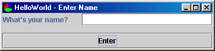
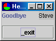

The first Scope sample demonstrating a simple Controller that manages two Views and a Model bound to the Views.
The application consists of two views, one model
and a single controller. The first view
shows when the application starts
and allows the user to enter a name:


The application's "main" is in this Launcher class. It creates and starts the HelloController:
public static void main(String[] inArgs) throws Exception {
HelloController appController = new HelloController();
appController.startup();
}
The HelloController is created by HelloLauncher.main(). It constructs itself with a new HelloModel and a new HelloView1. A controller's model and view are bound to each other automatically, so there is data-binding in place between the HelloModel and the HelloView1:
public HelloController() {
setModel(new HelloModel());
setView(new HelloView1());
}
The Launcher's main calls startup() on this Controller to kick it off: it simply shows the current view:
public void startup() {
showView();
}
The HelloController understands one Control that submits the entry on HelloView1 and switches to HelloView2. The controller mediates this "application flow", allowing the model to be concerned merely with manipulating state (and, in real applications, business rules and interactions with a business object layer), and the view to be concerned merely with what the user interacts with.
public static final String GOT_NAME = "gotName";
protected void doHandleControl(Control inControl) throws ControlException {
if (inControl.matchesID(GOT_NAME)) {
doGotName();
}
}
protected void doGotName() {
setView(new HelloView2()); // This new View will bind to the Controller's model
showView();
}
Note that application exit is handled with a default handler in BasicController which handles the EXIT_CONTROL_ID by doing a System.exit(). This behaviour could be changed if necessary: the LaunchpadLauncher application traps exit Controls from the child example applications so that it can shut down just the exiting Controller while keeping the application itself running until the user explicitly quits the Launcher itself.
The HelloModel is used by the HelloController to store state during a user session. The state for this application is simply a String "name" that the user enters on the first view, and which is then shown on the second view. This model is just a Javabean.
public class HelloModel {
private String name;
public void setName(String inName) {
name = inName;
}
public String getName() {
return name;
}
}
Note that this Javabean does not broadcast notification events when its state changes. This is examined later in the Swing examples.
This view lays out a simple panel with a textfield bound to a property of the model to which the view will bind. Controls are issued from this view from three places: on hitting Enter in the textfield, on pressing the button and on closing the view.
Notice the absence of any event handling or manipulation of the Swing models. In such a simple application this is a small win, but in larger applications, the benefits of allowing the framework to handle these details of swing interaction have proven worthwhile.
public HelloView1() {
setLayout(new BorderLayout(12, 12));
JLabel l = new JLabel("What's your name?");
add(l, BorderLayout.WEST);
STextField t = new STextField();
t.setColumns(20);
t.setSelector("name");
t.setControlID(HelloController.GOT_NAME);
add(t, BorderLayout.EAST);
add(new SButton(HelloController.GOT_NAME), BorderLayout.SOUTH);
}
public String getTitle() {
return "HelloWorld - Enter Name";
}
public Control getCloseControl() {
return new Control(HelloController.EXIT_CONTROL_ID);
}
When the STextfield needs to populate itself, it accesses the "name" property of the bound model. In the default Scope model implementation (which is based on the Javabeans API) the textfield will access this property via public getters and setters, eg getName() and setName() in the HelloModel.
Another simple panel bound to the same property in the model.
public HelloView2() {
setLayout(new BorderLayout(12, 12));
JLabel l = new JLabel("Goodbye");
add(l, BorderLayout.WEST);
SLabel bl = new SLabel();
bl.setSelector("name");
add(bl, BorderLayout.EAST);
add(new SButton(HelloController.EXIT_CONTROL_ID), BorderLayout.SOUTH);
}
public String getTitle() {
return "HelloWorld - Goodbye";
}
public Control getCloseControl() {
return new Control(HelloController.EXIT_CONTROL_ID);
}